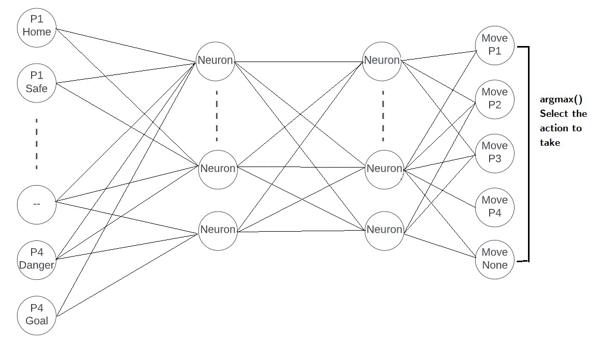

Deep Q-Network Agent for the Board Game Ludo
Team project · University of Tennessee, Knoxville
61.4%average win rate over 5 × 1,000 games
27%win rate of the first model
16state variables
Problem
Ludo combines chance, from the dice, with strategy: which piece to move, when to stay safe, and when to capture. That makes it a useful test for reinforcement learning, and little prior work has studied it.
Approach
- Built a Ludo environment and a Deep Q-Network agent with epsilon-greedy exploration, experience replay, and separate local and target networks.
- Encoded each of the four pieces with four state variables (home, safe, danger, goal), giving 16 inputs.
- Tuned the discount factor, learning rate, state representation, network depth, batch size, and buffer size for the first model.
- Redesigned the agent with five actions (move one of four pieces or none) and shaped rewards: +100 for winning, −100 for losing, ±50 for capturing or being captured, and −10 for overshooting.
Results
- The first DQN won about 27% of games, rising to 35% after tuning.
- The redesigned DQN won 61.9%, 61.7%, 61.3%, 60.8%, and 61.3% in five runs of 1,000 games, an average of 61.4%.


Skills
Deep Q-LearningReinforcement LearningReward ShapingHyperparameter TuningPython
Tools: Python, deep Q-learning